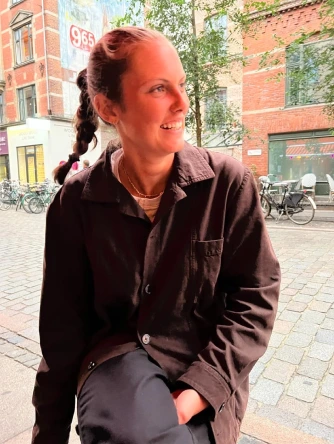

Om mig
MILLE STAFFELDT

Hvem er jeg?
Mit navn er Mille Staffeldt, jeg er 23 år gammel og bor i Indre By, København. Jeg studerer Multimediedesign på KEA, hvor jeg har fordybet mig i spændende projekter, der kombinerer kreativitet, design og digitale løsninger. Ved siden af mit studie arbejder jeg som backoffice manager og assistent hos Tromborg, hvor jeg har erfaring med kundeservice, logistik og administrative opgaver.
Jeg elsker at udforske kreative processer og udvikle løsninger, der både er funktionelle og æstetisk tiltalende. I min fritid nyder jeg at træne og tilbringe tid med venner og familie, som giver mig energi og inspiration til mine projekter.
Jeg glæder mig til at dele min rejse og mine projekter med dig her på min platform!
CV:
- 2023-nu: Backoffice Manager og Assistent, Tromborg
Erfaring med administrative opgaver, kundeservice og logistik. - 2023: Skiinstruktør, St. Anton, Østrig
- 2022: Skiinstruktør, Lech, Østrig
Undervisning af børn og voksne i ski på engelsk og tysk. - 2022: Piccoline, Bruun Rasmussen, København
Praktisk hjælp og administration.
Uddannelse:
- 2024-nu: Multimediedesign, KEA
- 2022: BASI Level 1 & 2 Skiinstruktør
- 2018-2021: STX, Ordrup Gymnasium